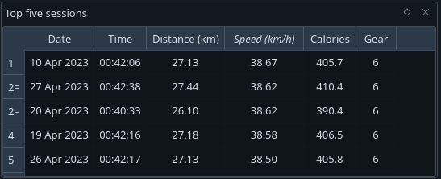

Tracks User Guide
 |
|---|
| Application window |
Adding data
| Adding a new session |
Use the 'Add data' widget to add info about sessions. You can add multiple sessions at once here. The values are validated as you enter them. Invalid values are shown in red.
If a newly added session was a personal best, a pop up will notify you.
| All data, grouped by month |
The new sessions are added to the 'Monthly data' tree. This groups sessions by month and gives a summary of each month. You can select the measure used to sumarise a category in Edit->Preferences->Data->Summary criteria. Available measures are sum, min, max and mean.
When multiple sessions in the tree are selected, a summary of them is shown in the status bar.
Plots
| Plot of session speed |
Session data is also shown in the plot window. The speed, distance, calories and time are all plotted - you can switch between the series by clicking on the labels underneath the plot.
Clicking on a point selects the corresponding session in the 'Monthly data' widget and vice versa.
The toolbar on the right can set the plot range to show all points or reset to the default range. The default range can be set in Edit->Preferences->Plot->Default plot range.
The star button in the toolbar highlights all points that were personal bests.
Personal bests
|  |
|---|
| Personal best widgets |
The widget in the top left shows personal best info. By default, the top five sessions are chosen by speed. To show the top sessions by another measure, click on the 'Top sessions' table header. The number of sessions can be changed in Edit->Preferences->Data->Top sessions.